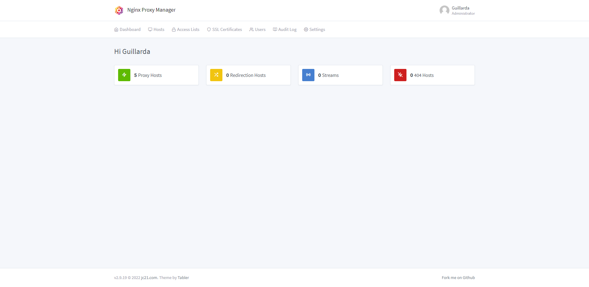

Bon, Nginx Proxy Manager c'est quoi ? Tout simplement c'est un reverse proxy qui se gère avec une jolie interface Web et qui est simple d'utilisation, si vous vous demandez en quoi j'ai besoin de ce système c'est tout simplement car je n'ai qu'une seule ip publique et que tous mes serveurs web sont hébergés dessus et que je ne peux donc pas avoir le port 80 (HTTP) et 443 (HTTPS) ouverts depuis l'extérieur sur plusieurs machines différentes donc je me retrouvais bloqué a n'avoir qu'un seul serveur web qui avait un certificat SSL et les autres étaient en HTTP sur des ports différents
Voici une image de l'interface web de gestion :
Comme vous le voyez l'interface est plutôt intuitive d'utilisation
Pour plus d'informations à propos de Nginx Proxy Manager voici ici même le lien : https://nginxproxymanager.com/